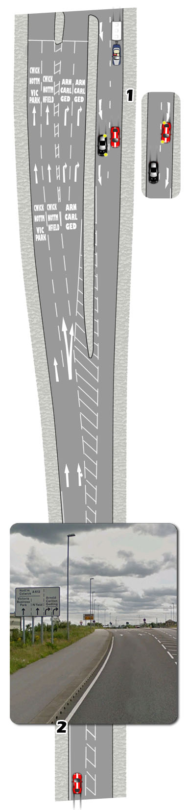

1.Lane Merge
After junctions, lanes will often merge back into one.
If you have chosen the leftmost lane for your intended route, merging should be made easier.
Traffic in the right lane should control its speed to slot in front or behind traffic on the left. This should be done safely with mirrors and signals.
Traffic in the left lane should check mirrors, (main and right), keep left and adjust speed gently (if required), to allow traffic to merge.
It is also possible that you will need to merge from the left to the right lane. Be prepared by looking out for the direction of the sweeping deflection arrow.

2.Lane Divide
It is common that the single lane you are driving in, will divide into two or more lanes, for differen’t destinations.
Where there are multiple lanes, this point is usually preceded by a sign (or signs) detailing the individual lane destinations.
Use the information to plan and avoid any unnecessary lane changes.
Road markings will usually be painted nearer to the junction to highlight the lane destination.
If you are in the wrong lane, attempt a safe lane change. If this is not possible, go off route and find your way back another way.